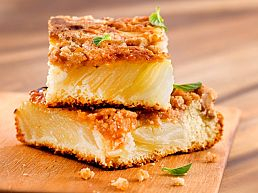

Recetas dulces
Torta invertida de Mandarina

- Ingredientes
- Para el caramelo: Azúcar para cubrir la pieza, C/N de Jugo de limón
- Para la masa: 1 Mandarina, 1 Huevo, 75gr de Azúcar, 2cdas de Aceite, Esencia de Vainilla, 100gr de Harina Leudante,50ml de leche
- Preparación
- Cubrir la sartén de 20cm con azúcar y el jugo de limón. Cocinar a fuego corona hasta lograr el caramelo! Dejamos enfriar y colocamos los gajos de mandarina! Para la masa, batir el huevo, el azúcar, la esencia de vainilla y el aceite! Después, poner la harina previamente tamizada y la leche hasta lograr el punto letra. Volcar arriba de las mandarinas y cocinar a fuego corona hasta poner un palito y salga limpio!
Carrot Cake
.jpg)
- Ingredientes
- 4 Unidades de Huevo 200 grs. de Azúcar negra 200 cc. de Aceite de oliva extra virgen "Olivos del salar" 300 grs. de Zanahoria 1 Pizca de Sal fina 300 grs. de Harina leudante 2 Cucharaditas de Canela en polvo 1 Cucharada de Polvo para hornear 2 Cucharaditas de Bicarbonato de sodio 150 grs. de Nuez (tostadas)
- Preparación
- Batimos las yemas con el azúcar y el aceite. Añadimos la zanahoria rallada. Batimos las claras con la sal a punto nieve y la agregamos de a cucharadas al batido anterior. Mezclamos la harina, la canela, el polvo de hornear, el bicarbonato e integramos tamizando a la mezcla anterior. Añadimos las nueces tostadas. Volcamos en la cacerola enmantecada, tapamos y cocinamos a fuego corona hasta finalizar la cocción.
Budin de banana y chocolate
- Ingredientes
- 2 Unidades de Huevo 150 grs. de Azúcar rubia 2 Unidades de Banana (maduras pisadas) 1 Cucharadita de Esencia de vainilla 2 Cucharadas de Aceite de oliva extra virgen "Olivos del salar" 140 grs. de Harina leudante (140 g) 105 grs. de Harina integral 1 Cucharada de Polvo para hornear 50 grs. de Nuez (picadas) 1 Cantidad Necesaria de Chocolate blanco (para decorar) 1 Cantidad Necesaria de Nuez (para decorar)
- Preparación
- En un bol batimos los huevos con el azúcar. Agregamos el puré de bananas, la esencia y el aceite. Incorporamos la harina leudante tamizada con el polvo para hornear y luego la harina integral. Por último los chips de chocolate. Mezclamos hasta lograr una preparación homogénea. Precalentamos la cacerola tapada 5' a fuego fuerte. Enmantecamos el Savarin y volcamos la mezcla. Colocamos el Savarin, tapamos y cocinamos a fuego medio hasta finalizar la cocción. Retiramos el Savarin de la Cacerola y desmoldamos sobre el desmoldatorta. Podemos decorar con baño de chocolate blanco o glasé y nueces.
Crumble de peras y nueces

- Ingredientes
- 1 Unidad de Huevo 75 grs. de Azúcar 1 Cucharadita de Esencia de vainilla 1 Cucharadita de Limón (solo ralladura) 2 Cucharadas de Aceite de oliva extra virgen "Olivos del salar" 150 grs. de Harina leudante 75 cc. de Leche 2 Cucharadas de Jugo (limon)
- Cobertura y crumble: 3 Unidades de Pera (o cuatro pequeñas) 50 grs. de Azúcar 50 grs. de Harina leudante 50 grs. de Nuez (picada) 2 Cucharadas de Aceite de oliva extra virgen "Olivos del salar" 1 Cucharadita de Canela en polvo 1 Cucharadita de Manteca
- Preparación
- • En un bol mezclamos el huevo con el azúcar y la esencia. Agregamos la ralladura, el aceite de oliva y luego de forma alternada, la harina tamizada, la leche y el jugo de limón. • Pelamos las peras y las cortamos al medio. Retiramos las semillas y luego las cortamos en rodajas bien finas (sin separarlas). • Enmantecamos las dos caras de la Flip. Volcamos la masa en la parte más profunda. Cubrimos con las peras. • En un bol pequeño mezclamos el azúcar, la harina, las nueces picadas, el aceite de oliva y la canela hasta formar un arenado. • Distribuimos el crumble sobre las peras. • Cerramos y cocinamos a fuego mínimo 15’. • Damos vuelta la Flip y continuamos a fuego mínimo hasta finalizar la cocción.
Cheesecake de limas con salsa de frutos rojos
- Ingredientes
-
Para la base:
150 grs. de Galletita Vainilla
60 grs. de Manteca
- Para el relleno: 1 Unidad de Huevo 1 Unidad de Yema 50 grs. de Azúcar 180 grs. de Queso crema 1 Unidad de Lima jugo y ralladura 2 Cucharaditas de Maíz Fécula 80 cc. de Crema de leche
- Para la salsa de frutos rojos: 1/2 Taza de Frutilla 1/2 Taza de Arándanos 1/2 Taza de Azúcar 1 Unidad de Limón Jugo
- Preparación
- Procesar las galletitas y mezclarlas con la manteca derretida. Tapizar la base de la Flip y reservar. En un bowl mezclar el huevo, la yema y el azúcar. Agregar el queso crema y continuar mezclando hasta integrar. Disolver la fécula de maíz en el jugo de lima, e incorporar a la mezcla, junto con la ralladura. Por último, agregar la crema de leche semi batida e integrar. Volcar la preparación sobre la base de galletitas. Llevar la Flip a fuego corona y cocinar por 30 minutos aproximadamente. Luego dejar enfriar, desmoldar y cortar en cuadraditos. Para la salsa de frutos rojos: colocar en una Cacerola los frutos rojos, el azúcar y el jugo de limón. Llevar a fuego medio, revolviendo constantemente hasta espesar. Salsear los cuadraditos de cheesecake de lima con la salsa y servir.
Cupcakes de naranja

- Ingredientes
- 100 grs. de Manteca a temperatura ambiente 110 grs. de Azúcar 1 Unidad de Naranja (solo cascara rallada) 2 Unidades de Huevo 120 grs. de Harina leudante 100 grs. de Dulce de leche repostero 24 Unidades de Pirotín nº10
- Preparación
- En un bol batimos la manteca con el azúcar hasta lograr una crema. Agregamos la cáscara rallada de naranja y los huevos. Incorporamos la harina tamizada y mezclamos bien hasta lograr una preparación homogénea. Colocamos una cucharada de mezcla en los pirotines (colocarlos de a dos, para evitar que la preparación se expanda durante la cocción). En el centro, distribuimos una cdta de dulce de leche. Cubrimos con más mezcla, sólo hasta la mitad del pirotín y los colocamos en el complemento. Calentamos la pieza tapada a fuego fuerte. Introducimos el complemento. Tapamos y cocinamos a fuego medio hasta finalizar la cocción (20’ aprox.). Apagamos el fuego y dejamos en reposo 5’ en la Pizzera tapada. Retiramos el complemento y dejamos enfriar. Decoramos con un copete de merengue o crema chantilly.
Torta de mandarinas y lima
- Ingredientes
- 3 Unidades de Mandarina 1 Taza de Azúcar 1 Taza de Aceite neutro 3 Unidades de Huevo 3 Tazas de Harina leudante 1 Unidad de Lima rallada
- Para el merengue 4 Unidades de Huevo Claras de 240 grs. de Azúcar 80 cc. de Agua)
- Preparación
- Colocar en una licuadora las mandarinas sin semillas y con su cáscara, previamente lavadas. Agregar la taza de azúcar, la taza de aceite y los huevos. Licuar todos los ingredientes y volcar la mezcla en un bol. Incorporar las 3 tazas de harina leudante en forma envolvente y agregar la ralladura de lima. Unir bien. Pasar la mezcla de la torta de mandarinas a la Sartén. Llevar a fuego corona durante toda su cocción y cocinar durante 1 hora aproximadamente. Corroborar la cocción insertando un palillo, el mismo debe salir seco. Una vez cocido desmoldar y dejar reposar hasta que tome temperatura ambiente. Para el merengue, colocar en una Cacerola el azúcar y el agua. Llevar a fuego medio hasta realizar un almíbar a punto bolita. Mientras tanto batir las claras a nieve. Una vez que el almíbar alcance la temperatura de 118ºC, volcar en forma de hilo sobre las claras batidas a nieve. Batir continuamente hasta que el merengue tome temperatura ambiente. Decorar la torta con el merengue y ralladura de lima. Servir y disfrutar.
Mini budines de pera
- Ingredientes
- 400 grs. de Pera cortadas en gajos 100 grs. de Azúcar rubia para el caramelo 50 cc. de Vino oporto 100 cc. de Aceite de Oliva Extra Virgen 150 grs. de Azúcar rubia 1 Cucharadita de Esencia de vainilla 3 Unidades de Huevo 170 grs. de Harina 000 15 grs. de Polvo para hornear 8 Unidades de Pirotín de silicona (o de papel)
- Preparación
- Colocamos el azúcar en la Sartén, tapamos y llevamos a fuego medio hasta lograr un caramelo claro; agregamos las peras, el vino oporto y caramelizamos. En un bowl colocamos el aceite, el azúcar, la esencia de vainilla, los huevos y batimos. Agregamos la harina tamizada con el polvo para hornear. Mezclamos hasta lograr una preparación homogénea. Colocamos porciones de pera en los moldecitos de silicona lubricados. Rellenamos los moldecitos con la mezcla (hasta las 2/3 partes) y los ubicamos en el complemento para tartas. Abrimos el Ecohorno y colocamos el aro soporte. Cerramos y precalentamos 10’ a fuego fuerte. Abrimos y ubicamos el complemento. Cocinamos a fuego medio. Utilizamos el escape de vapor abierto. Retiramos cuando estén cocidos y doraditos. Desmoldamos. Podemos darles brillo con mermelada.
Cupcake de chocolate y oliva
- Ingredientes
- 280 grs. de Harina leudante 1 Pizca de Sal fina 2 Cucharadas de Polvo para hornear 2 Cucharadas de Cacao amargo 150 grs. de Azúcar 100 grs. de Chips de chocolate blanco 3 Unidades de Huevo 125 cc. de Leche tibia 60 cc. de Aceite de Oliva Extra Virgen 1 Cucharadita de Esencia de vainilla
- Preparación
- En un bol mezclamos todos los ingredientes secos. · Por otro lado mezclamos los huevos, la leche, el aceite de oliva y la esencia de vainilla. · Incorporamos los líquidos al bol y mezclamos hasta formar una masa cremosa. · Volcamos la preparación en los moldes de silicona o pirotines de papel. · Los llenamos hasta las ¾ partes del molde. · Precalentamos el ecohorno por 7’ a fuego máximo. · Colocamos los pirotines en el complemento de tartas, lo llevamos dentro del ecohorno sobre el aro soporte, tapamos y cocinamos a fuego medio hasta finalizar la cocción.
Budín de arándanos
- Ingredientes
- 200 grs. de Harina leudante 100 grs. de Azúcar 4 Cucharadas de Almidón de maíz 100 cc. de Crema de leche 190 grs. de Yogur de vainilla 4 Cucharadas de Aceite de oliva extra virgen "Olivos del salar" 50 grs. de Arándanos 1 Cucharada de Manteca
- Preparación
- Mezclamos en un bowl la harina y el azúcar. Disolvemos la fécula en la leche e incorporamos a la preparación anterior. Agregamos el yogur y el aceite. Batimos con batidora eléctrica para integrar bien todos los ingredientes. Por último, incorporamos los arándanos espolvoreados con harina. Volcamos la preparación en el Savarín enmantecado. Introducimos el Savarín en la Cacerola precalentada (5’ a fuego fuerte). Tapamos y cocinamos a fuego medio hasta completar su cocción. Retiramos el Savarin de la Cacerola, pasamos una espátula por los bordes y desmoldamos.
Rosca de Pascuas
- Ingredientes
- Masa Previa: 1 Cucharada de Miel 100 cc. de Leche 125 grs. de Harina 10 grs. de Levadura
- Masa Rosca: 100 grs. de Manteca 100 grs. de Azúcar 2 Unidades de Huevo 75 cc. de Leche 30 grs. de Levadura 1 Cucharada de Esencia de vainilla 1 Cucharada de Limón Ralladura 375 grs. de Harina 0000
- Crema Pastelera: 250 cc. de Leche 150 grs. de Azúcar 2 Unidades de Huevo 25 grs. de Almidón de maíz 20 grs. de Harina 0000 1 Cucharada de Esencia de vainilla
- Preparación
- Mezclar todos los ingredientes de la masa previa. Dejar fermentar tapada 1 hora en un lugar cálido. Agregar a la masa previa la manteca, el azúcar, el huevo, la leche, la levadura, la esencia, la ralladura y la harina. Amasar bien (alrededor de 10 minutos) hasta obtener una masa lisa y suave que se despegue de la mesada. Si es necesario usar un poco de harina extra para amasar. Hacer un bollo y realizarle un hueco en el centro. Colocarlo en el Savarín de 24 enmantecado. Tapar y dejar fermentar nuevamente 1 hora en un lugar cálido. Colocar el Savarín en la Cacerola y tapar. Cocinar 40’ a fuego mínimo o hasta que al insertar un palillo de madera salga limpio. Puede crecer y pasarse un poco del Savarín. Desmoldar y dejar enfriar. Decorar con crema pastelera, hilos de chocolate, golosinas, frutas, huevos de chocolate o lo que más les guste.